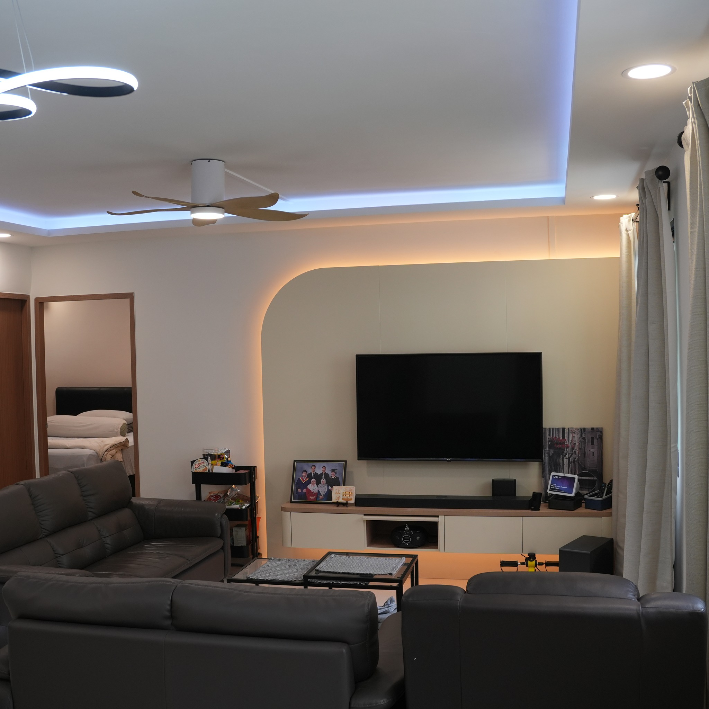
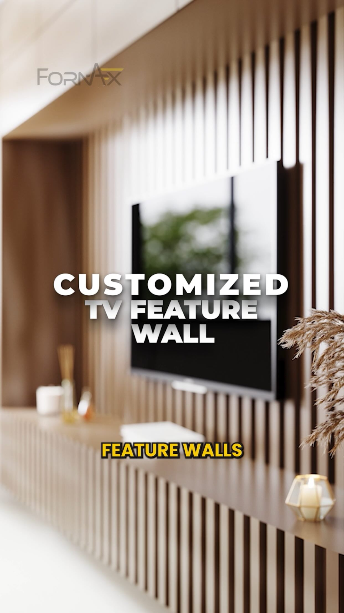
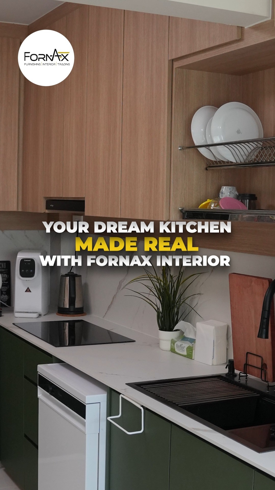
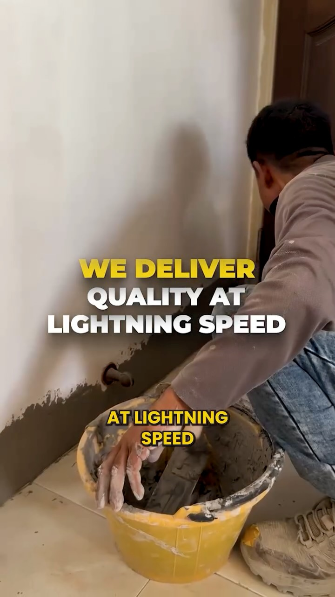
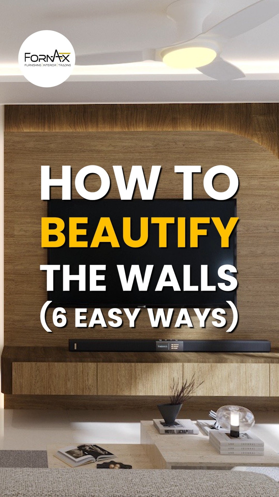

↗WOODLANDS · COMPLETE HOMEThe portfolio · Singapore
Spaces shaped
around living.
A considered selection of real Fornax Interior work, from whole-home transformations to the details that make daily life flow.
01 — SELECTED WORK
↗LIVING · CUSTOM CARPENTRY
↗KITCHEN · MADE TO MEASURE
↗ON SITE · IN THE MAKING
↗DESIGN STUDY · FEATURE WALLPortfolio imagery is drawn from Fornax Interior’s public Instagram and includes design visualisations and progress imagery.
Your home, next